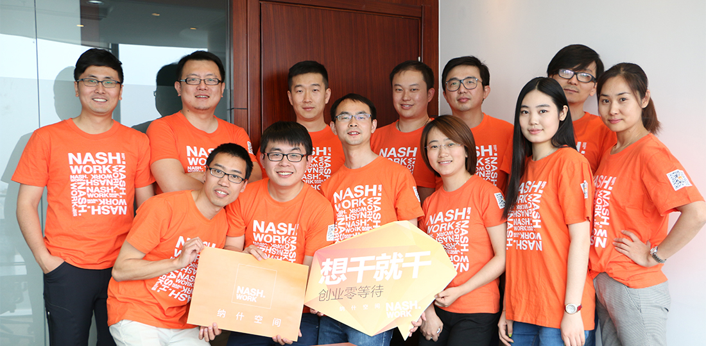
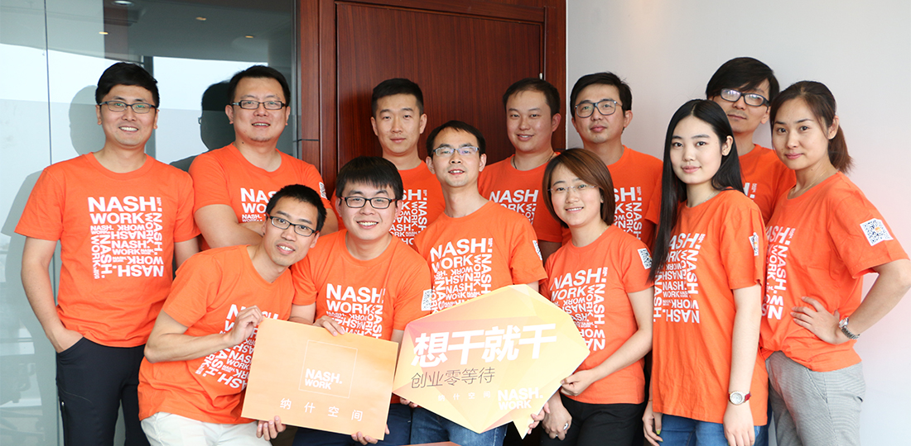

纳什空间
纳什空间
纳什空间是一个为所有创业者和企业家而生的梦想空间，是为大家提供工作空间、共享服务和办公社交的O2O服务平台。在纳什空间，人们可以享受到高品质的办公空间和共享服务，并可加入到令人兴奋和充满无限可能的工作社交中来。无论您是位经验丰富的企业家，或是位勇于冒险的创业者，您都可以在纳什空间遍布北京核心商圈的服务中心里找到心目中最理想的工作场所。有纳什负责主营业务之余的繁琐事务，您可以全情投入到自己的工作中去，与纳什空间一道向更多区域、城市、国家发展，并与千万个纳什空间的用户一同分享工作中的快乐，自由的实现自己的人生。
2013年，纳什空间有了自己的第一间办公室。那时，我们希望可以为企业家提供优质、优美的办公环境。
2014年，纳什空间有了自己的第二百间办公室。那时，我们希望可以通过贴心的服务，让每个创业者全情投入自己的工作。
2015年，纳什空间有了自己的微信公众号和种子铁粉，并即将拥有自己的第一千间办公室。此时，我们更希望你可以加入到我们为所有企业家和创业者提供的线上线下一体的工作社区中来，寻找自己的合作伙伴、体验兴奋的办公社交。
走在创业路上，纳什空间找到了自己的事业。
你的创业，我的事业。
纳什领头人为连续创业团队，多年深耕房地产领域及移动互联网领域，对地产市场理解和判断有独到优势。我们目前有完整经过磨合的执行团队，成员来自清华、北大、同济等学府，高速运转中。


 

北京市朝阳区东三环中路7号北京财富中心A座38层3806室 (100026)
400-650-0869
010-65330266